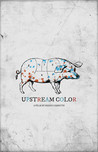
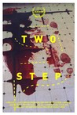
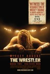
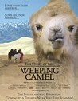
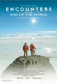
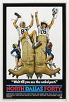
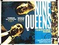

Movie Releases By Score


|
1001.
Chris & Don. A Love Story
Release Date:
June 13, 2008
Chris & Don: A Love Story is the true-life story of the passionate three-decade relationship between British writer Christopher Isherwood and American portrait painter Don Bachardy, thirty years his junior. From Isherwood’s Kit-Kat-Club years in Weimar-era Germany (the inspiration for his most famous work) to the couple’s first meeting on the sun-kissed beaches of 1950s Malibu, their against-all-odds saga is brought to dazzling life by a treasure trove of multimedia. Bachardy’s contemporary reminiscences (in the Santa Monica home he shared with Isherwood until his death in 1986) artfully interact with archival footage, rare home movies (with glimpses of glitterati pals W.H. Auden, Igor Stravinsky and Tennessee Williams), reenactments, and, most sweetly, whimsical animations based on the cat-and-horse cartoons the pair used in their personal correspondence. With Isherwood’s status as an out-and-proud gay maverick, and Bachardy’s eventual artistic triumph away from the considerable shadow of his life partner, Chris & Don: A Love Story is above all a joyful celebration of a most extraordinary couple. (Zeitgeist Films)
|
1002.
Still Life
Release Date:
January 18, 2008
Sam Ming makes a trip to the City of Fenjge to find his ex-wife and daughter. He has not seen them for several years. (Ad Vitam)
|
|

|
1003.
Gimme the Loot
Release Date:
March 22, 2013
Malcolm and Sofia, two determined teens from the Bronx, are the ultimate graffiti-writers. When a rival gang buffs their latest masterpiece, they hatch a plan to get revenge by tagging an iconic NYC landmark, but they must raise $500 to pull off their spectacular scheme. Over the course of two whirlwind, sun-soaked summer days, Malcolm and Sofia travel on an epic urban adventure involving black market spray cans, illicit bodegas, stolen sneakers, a high stakes heist, and a beautiful, stoned girl whose necklace is literally their key to becoming the biggest writers in the City. [IFC Films]
|

|
1004.
Tchoupitoulas
Release Date:
December 7, 2012
Three brothers make their way through a night of discovery in this New Orleans documentary.
|

|
1005.
Blood Simple
Release Date:
January 18, 1985

Deep in the heart of Texas, a sleazy bar owner suspects his wife of having an affair and hires a private detective to confirm his suspicions—only to have the crosshairs turned back on himself. [Janus Films]
|

|
1006.
Cousin Jules
Release Date:
November 27, 2013
A rare combination of sophisticated movie-making technique (shot in CinemaScope and recorded in stereo) and content that is a veritable ode to the beauty of rural France, the simplicity of daily peasant life, and the nearly wordless intimacy of a lifelong relationship. Recording over a 5-year period, director Benicheti palpably captures the rhythms and rituals of blacksmith Jules Guiteaux and his wife Félicie as Jules dons wooden clogs and leather apron to begin work in his shop, while Félicie tends a vegetable
garden and prepares their meals. [The Cinema Guild]
|

|
1007.
Skyfall
Release Date:
November 9, 2012

In Skyfall, Bond’s loyalty to M is tested as her past comes back to haunt her. As MI6 comes under attack, 007 must track down and destroy the threat, no matter how personal the cost. [Columbia Pictures, MGM]
|
1008.
Thunder Soul
Release Date:
September 23, 2011

Houston's legendary Kashmere Stage Band reunites in this funky, soulful, award-winning film. In an amazing testament to the power of music and teachers, the group comes back together after more than 30 years to pay tribute to their band-leader and mentor in what is sure to be one of the most beloved, and rump-shaking, docs of the year. (Roadside Attractions)
|
|
1009.
Of Time and the City
Release Date:
January 21, 2009
From the original voice of the great British auteur, Terence Davies, comes a visual poem which draws upon the first 28 years of the director's life in Liverpool until he left in 1973. "Cut it as if it were fiction," Davies says, with "images which speak" and a layered sound track of popular and classical music, voices, radio clips and a powerful, poignant voiceover by Mr. Davies. Of Time and The City is a very personal portrait of Liverpool, beyond its Beatles and its football clubs, the home of the writer’s birth, where youth and inspiration weave his own story into the recent history of the City with fascinating found footage and counterpointed sound. (Strand Releasing)
|
|

|
1010.
In the Company of Men
Release Date:
August 1, 1997
A psychological love triangle set within 90's corporate culture. (Sony Picture Classics)
|

|
1011.
Consuming Spirits
Release Date:
December 12, 2012
Consuming Spirits 16mm to HD, is an Independent feature animation, chronicling the lives of three characters who live in a rust belt town called Magguson, and work at its local newspaper The Daily Suggester. They are: Gentian Violet 42: Victor Blue 38: and Earl gray 64: first appear to be acquaintances. But as the film unfolds, we find they have a long diabolical history, revolving around social service intervention, and foster care, romance and hatred. Each character has family secrets to hide, and family secrets to discover. An auto accident one dark and inebriated night, causes a crack in the memory vault of these intimate strangers. By films end all parties walk from the woods, both healed and wounded..enjoy..
|
|

|
1012.
Upstream Color
Release Date:
April 5, 2013
A man and woman are drawn together, entangled in the life cycle of an ageless organism. Identity becomes an illusion as they struggle to assemble the loose fragments of wrecked lives.
|
|
|
1013.
Whose Streets?
Release Date:
August 11, 2017
Told by the activists and leaders who live and breathe this movement for justice, Whose Streets? is an unflinching look at the Ferguson uprising. When unarmed teenager Michael Brown is killed by police and left lying in the street for hours, it marks a breaking point for the residents of St. Louis, Missouri. Grief, long-standing racial tensions and renewed anger bring residents together to hold vigil and protest this latest tragedy. Empowered parents, artists, and teachers from around the country come together as freedom fighters. As the national guard descends on Ferguson with military grade weaponry, these young community members become the torchbearers of a new resistance.
|
|
|
1014.
Hunt for the Wilderpeople
Release Date:
June 24, 2016
Raised on hip-hop and foster care, defiant city kid Ricky gets a fresh start in the New Zealand countryside. He quickly finds himself at home with his new foster family: the loving Aunt Bella, the cantankerous Uncle Hec, and dog Tupac. When a tragedy strikes that threatens to ship Ricky to another home, both he and Hec go on the run in the bush. As a national manhunt ensues, the newly branded outlaws must face their options: go out in a blaze of glory or overcome their differences and survive as a family. [The Orchard]
|
|
|
1015.
Ballets Russes
Release Date:
October 26, 2005
Unearthing a treasure trove of archival footage, filmmakers Dan Geller and Dayna Goldfine have fashioned a dazzlingly entrancing ode to the revolutionary twentieth-century dance troupe known as the Ballets Russes. What began as a group of Russian refugees who never danced in Russia became not one but two rival dance troupes who fought the infamous "ballet battles" that consumed London society before World War II. [Zeitgeist Films]
|
|
|
1016.
The General
Release Date:
December 18, 1998
The real-life story of Dublin folk hero and criminal Martin Cahill, who pulled off two daring robberies in Ireland, but attracted unwanted attention from the police, the IRA, the UVF and members of his own team.
|
|
|
1017.
Harry Potter and the Goblet of Fire
Release Date:
November 18, 2005
Harry and friends are back in this fourth installment of the series.
|
|
|
1018.
Hell and Back Again
Release Date:
October 1, 2011
In 2009, U.S. Marines launched a major helicopter assault on a Taliban stronghold in southern Afghanistan. Within hours of being dropped deep behind enemy lines, 25-year-old Sergeant Nathan Harris’s unit is attacked from all sides. Embedded in Echo Company during the assault, photojournalist and filmmaker Danfung Dennis captures the frontline action with visceral immediacy. When Sergeant Harris returns home to North Carolina after a life-threatening injury in battle, the film evolves from stunning war reportage to the story of one man’s personal apocalypse. With the love and support of his wife, Ashley, Harris struggles to overcome the difficulties of transitioning back to civilian life. The two realities seamlessly intertwine to communicate both the extraordinary drama of war and, for a generation of soldiers, the no-less-difficult experience of returning home. An unprecedented exploration of the moving image and a film of uncommon intimacy, Hell and Back Again comes full circle as it lays bare the true cost of war. (Docurama Films)
|
1019.
In Jackson Heights
Release Date:
November 4, 2015
Jackson Heights, Queens is one of the most culturally diverse communities in the US where 167 languages are spoken. In Jackson Heights explores the conflict between maintaining ties to old traditions and adapting to American values.
|
|
|
|
1020.
Hairspray
Release Date:
July 20, 2007
Based on the 1988 John Waters’ cult classic, Hairspray is the story of Tracy Turnblad, a big girl with big hair and an even bigger heart, who has only one passion—dancing. When her dream of becoming a regular personality on “The Corny Collins Show” comes true, she wins many fans and becomes an advocate for integration. (New Line Cinema)
|

|
1021.
I'm the One That I Want
Release Date:
July 7, 2000
Set in San Francisco's Warfield Theatre, this concert film starring comedienne Margaret Cho covers a wide variety of topics including her mother, drug and alcohol abuse, homosexuality, and the failure of "All-American Girl," a network television comedy starring Ms. Cho as the anti-stereoytypical daughter of an Asian-American family.
|

|
1022.
The Blair Witch Project
Release Date:
July 16, 1999
On October 21, 1994, Heather Donahue, Joshua Leonard and Michael Williams hiked into Maryland's Black Hills Forest to shoot a documentary film on a local legend, The Blair Witch. They were never heard from again. One year later, their footage was found. The Blair Witch Project is their legacy. [Artisan Entertainment]
|

|
1023.
Flirting with Disaster
Release Date:
March 22, 1996
In a quest to find his biological parents, Mel Coplin (Stiller) -- joined by his wife (Arquette) and a sexy adoption counselor (Leoni) -- embarks on a cross country search for his "roots." (Miramax)
|
1024.
Il Postino: The Postman
Release Date:
June 14, 1995
On an island off the coast of Italy, a young postman's world is changed when he begins delivering letters to the exiled poet Pablo Neruda.
|
|
|
|
1025.
King Kong
Release Date:
December 14, 2005
Director Peter Jackson (The Lord of the Rings trilogy) helms the dramatic adventure King Kong, bringing his sweeping cinematic vision to the iconic story of the gigantic ape captured in the wild and brought to civilization where he meets his tragic fate. (Universal Studios)
|
|
|
1026.
Daughters of the Dust
Release Date:
December 27, 1991
At the dawn of the 20th century, a multi-generational family in the Gullah community on the Sea Islands off of South Carolina – former West African slaves who adopted many of their ancestors’ Yoruba traditions – struggle to maintain their cultural heritage and folklore while contemplating a migration to the mainland, even further from their roots. [Cohen Media Group]
|
|
|
1027.
Goodnight Mommy
Release Date:
September 11, 2015
In the heat of the summer lays a lonesome house in the countryside where nine year old twin brothers await their mother’s return. When she comes home, bandaged after cosmetic surgery, nothing is like before and the children start to doubt whether this woman is actually who she says she is. What ensues is a terrifying struggle for identity and fundamental trust. [RADiUS-TWC]
|
1028.
Bonnie and Clyde
Release Date:
August 13, 1967
Warren Beatty and Faye Dunaway are the legendary Depression-era bandits and lovers in this landmark film that won two Academy Awards and triggered a revolution in screen violence. (Warner Bros.)
|
|
|  |
1029.
Two Step
Release Date:
July 31, 2015
Kicked out of college, James (Skyy Moore) visits Grams, his only remaining family, who dies shortly after his arrival. He finds consolation in the company of Grams’ neighbor, Dot (Beth Broderick), a dance teacher, as he figures out his next move. While settling Grams’ affairs, James learns she’s been the victim of the “grandparent scam” in which someone posing as James has been slowly bilking her out of thousands. But before James can go looking for the culprit, he shows up at the front door, desperate for money. The culprit, Webb (James Landry Hébert), has his own problems in the form of Duane (Jason Douglas), who has ordered Webb to pay an old debt or else. And if Webb can’t get it from Grams, James will have to do – no matter who stands in his way.
|
|
|
1030.
Inherent Vice
Release Date:
December 12, 2014
When private eye Doc Sportello’s ex-old lady suddenly out of nowhere shows up with a story about her current billionaire land developer boyfriend whom she just happens to be in love with, and a plot by his wife and her boyfriend to kidnap that billionaire and throw him in a loony bin...well, easy for her to say. It’s the tail end of the psychedelic `60s and paranoia is running the day and Doc knows that “love” is another of those words going around at the moment, like “trip” or “groovy,” that’s being way too overused—except this one usually leads to trouble. [Warner Bros.]
|
|

|
1031.
The Wrestler
Release Date:
December 17, 2008
Back in the late ‘80s, Randy “The Ram” Robinson was a headlining professional wrestler. Now, twenty years later, he ekes out a living performing for handfuls of diehard wrestling fans in high school gyms and community centers around New Jersey. (Fox Searchlight)
|

|
1032.
Starred Up
Release Date:
August 27, 2014
19-year-old Eric (Jack O'Connell) is prematurely transferred to the same adult prison facility as his estranged father (Ben Mendelsohn). As his explosive temper quickly finds him enemies in both the prison authorities and fellow inmates — and his already volatile relationship with his father is pushed past the breaking point — Eric is approached by a volunteer psychotherapist (Rupert Friend), who runs an anger management group for prisoners. Torn between gang politics, prison corruption, and a glimmer of something better, Eric finds himself in a fight for his own life, unsure if his own father is there to protect him or join in punishing him. [Tribeca Film]
|
|
|
1033.
Midnight in Paris
Release Date:
May 20, 2011
This is a romantic comedy set in Paris about a family that goes there because of business, and two young people who are engaged to be married in the fall have experiences there that change their lives. It's about a young man's great love for a city, Paris and the illusion people have that a life different from theirs would be much better. (Sony Classic Pictures)
|
|
|
1034.
The Guardians
Release Date:
May 4, 2018
An affecting human drama of love, loss, and resilience unfolds against the backdrop of World War I. The women of the Paridier farm, under the deft hand of Hortense, the family's matriarch (Nathalie Baye), must grapple with the workload while the men, including two sons, are off at the front. Hortense reluctantly brings on an outsider, the hard-scrabble teenage orphan, Francine (Iris Bry), to help her daughter Solange (Laura Smet). New tools allow the women to triumph over the land, newfound independence is acquired, yet emotions are stirred especially when the men return from the front on short leaves.
|

|
1035.
Mirai
Release Date:
November 30, 2018
Kun, a little boy, enjoys a happy childhood until the arrival of his baby sister, Mirai. As the new baby becomes the center of his parents' attention, he becomes increasingly jealous. Little by little, he withdraws into himself. In the backyard where he likes to take refuge, grows a magical family tree. Kun finds himself suddenly catapulted into a fantastic world where the past and the present mingle. One after another, he meets his relatives at different ages: his mother, as a little girl; his great-grandfather, as an energetic young man; and his little sister, as a teenager. Through these adventures, Kun is able to discover his own story. [Gkids]
|
|
|
1036.
A War
Release Date:
February 12, 2016
Company commander Claus M. Pedersen (Pilou Asbæk) and his men are stationed in an Afghan province. Meanwhile back in Denmark Claus' wife Maria (Tuva Novotny) is trying to hold everyday life together with a husband at war and three children missing their father. During a routine mission, the soldiers are caught in heavy crossfire and in order to save his men, Claus makes a decision that has grave consequences for him - and his family back home.
|
|
|
1037.
Star Wars: Episode VII - The Force Awakens
Release Date:
December 18, 2015
A continuation of the Star Wars saga.
|
|
|
1038.
The World's End
Release Date:
August 23, 2013
20 years after attempting an epic pub crawl, five childhood friends reunite when one of them becomes hell bent on trying the drinking marathon again. They are convinced to stage an encore by mate Gary King, a 40-year old man trapped at the cigarette end of his teens, who drags his reluctant pals to their home town and once again attempts to reach the fabled pub, The World's End. As they attempt to reconcile the past and present, they realize the real struggle is for the future, not just theirs but humankind's. Reaching The World's End is the least of their worries.
|
1039.
Tuesday, After Christmas
Release Date:
May 27, 2011
In the days leading up to Christmas, a married man forces himself to choose between his wife and his mistress. A sharply observed, deeply felt drama from director Radu Muntean, showcasing the strengths of current Romanian cinema in its beautifully calibrated performances, expert craftsmanship, and dazzling technical mastery.(Lorber Films)
|
|
|

|
1040.
The Story of the Weeping Camel
Release Date:
June 4, 2004
Set amid the cast expanse of South Mongolia's Gobi Desert, this film follows the adventures of a family of camel herders who face a crisis when one mother camel rejects her newborn, following a particularly difficult delivery. Invoking an ancient ritual, the family sends two of its young boys to the capital city to enlist the aid of a musician whom they believe will coax the mother camel into nursing her baby. (ThinkFilm)
|

|
1041.
Chaos
Release Date:
January 29, 2003
When a bourgeois French couple witnesses a young prostitute being violently attacked by a group of men just outside of their car, all three of their lives are changed.
|

|
1042.
Crimson Gold
Release Date:
January 16, 2003
A murder and a suicide occur early one morning in a jewelry store. Behind this headline lies the story of a desperate man's feelings of humiliation in a world of social injustice.
|
1043.
Faat Kiné
Release Date:
March 30, 2001
Set in Dakar, Senegal, the film features a forty-year-old woman who refuses to give into the stigma of unwed motherhood and climbs the ladder of success in a male dominated field.
|
|

|
1044.
Menashe
Release Date:
July 28, 2017
Deep in the heart of New York’s ultra-orthodox Hasidic Jewish community, Menashe—a kind, hapless grocery store clerk—struggles to make ends meet and responsibly parent his young son, Rieven, following his wife Leah’s death. Tradition prohibits Menashe from raising his son alone, so Rieven’s strict uncle adopts him, leaving Menashe heartbroken. Meanwhile, though Menashe seems to bungle every challenge in his path, his rabbi grants him one special week with Rieven before Leah’s memorial. It’s his chance to prove himself a suitable man of faith and fatherhood, and restore respect among his doubters. [A24]
|
|
|
1045.
District 9
Release Date:
August 14, 2009
Over twenty years ago, aliens made first contact with Earth. Humans waited for the hostile attack, or the giant advances in technology. Neither came. Instead, the aliens were refugees, the last survivors of their home world. The creatures were set up in a makeshift home in South Africa’s District 9 as the world’s nations argued over what to do with them. Now, patience over the alien situation has run out. The tension between the aliens and the humans comes to a head when a human field operative, Wikus van der Merwe, contracts a mysterious virus that begins changing his DNA. Wikus quickly becomes the most hunted man in the world, as well as the most valuable – he is the key to unlocking the secrets of alien technology. Ostracized and friendless, there is only one place left for him to hide: District 9. [Sony Pictures]
|

|
1046.
The World
Release Date:
July 1, 2005
Acclaimed Chinese director Jia Zhangke casts a compassionate eye on the daily loves, friendships and desperate dreams of the twenty-somethings from China’s remote Provinces who come to live and work at Beijing’s World Park. (Zeitgeist Films)
|

|
1047.
Paprika
Release Date:
May 25, 2007
Dr. Atsuko Chiba is a genius scientist by day, and a kick-ass dream warrior named Paprika by night. In this psychedelic sci-fi adventure anime, it will take the skills of both women to save the world. (Sony Pictures Classics)
|
|
|
1048.
Picnic at Hanging Rock
Release Date:
February 2, 1979
On Valentine's Day 1900, three school girls and a school teacher go missing under mysterious circumstances during a trip to Hanging Rock in Victoria, Australia.
|

|
1049.
Ai Weiwei: Never Sorry
Release Date:
July 27, 2012
Ai Weiwei: Never Sorry is the first feature-length film about the internationally renowned Chinese artist and activist, Ai Weiwei. In recent years, Ai has garnered international attention as much for his ambitious artwork as his political provocations. AI WEIWEI: NEVER SORRY examines this complex intersection of artistic practice and social activism as seen through the life and art of China’s preeminent contemporary artist. (Sundance Selects)
|

|
1050.
The Art of Self-Defense
Release Date:
June 21, 2019
After he’s attacked on the street at night by a roving motorcycle gang, timid bookkeeper Casey (Jesse Eisenberg) joins a neighborhood karate studio to learn how to protect himself. Under the watchful eye of a charismatic instructor, Sensei (Alessandro Nivola), and hardcore brown belt Anna (Imogen Poots), Casey gains a newfound sense of confidence for the first time in his life. But when he attends Sensei’s mysterious night classes, he discovers a sinister world of fraternity, brutality and hyper-masculinity, presenting a journey that places him squarely in the sights of his enigmatic new mentor.
|

|
1051.
To Live and Die in L.A.
Release Date:
November 1, 1985
A bold Secret Service (William Petersen) agent straddles the line to bring down the counterfeiter (Willem DaFoe) who killed his partner.
|
|
|
1052.
Right Now, Wrong Then
Release Date:
June 24, 2016
Quite by accident, a film director arrives in town a day early. With time to kill before his lecture the next day, he stops by a restored, old palace and meets a fledgling artist. She’s never seen any of his films, but knows he’s famous. They talk. And together, they go to her workshop to look at her paintings, have Sushi and Soju. More conversation follows, and drinks, and then an awkward get-together with friends where all sorts of secrets are revealed. All the while, they may or may not be falling for each other. Then, quite unexpectedly, we begin again, but now things appear somewhat different. [Grasshopper Film]
|
|
|
1053.
Bad Education
Release Date:
November 19, 2004

In the early 60s, two boys - Ignacio and Enrique - discover love, movies and fear in a Christian school. Father Manolo, the school principal and Literature teacher, both witnesses and takes part in these discoveries. The three characters come against one another twice again, in the late 70s and in 1980. These meetings are set to change the life and death of some of them. (Club Cultura)
|

|
1054.
You, the Living
Release Date:
July 29, 2009
You, the Living is a film about humankind, its greatness and its baseness, joy and sorrow, its self-confidence and anxiety, its desire to love and be loved. [Palisades Tartan]
|

|
1055.
Silver Linings Playbook
Release Date:
November 16, 2012
Life doesn’t always go according to plan...Pat Solitanohas lost everything -- his house, his job, and his wife. He now finds himself living back with his mother and father after spending eight months in a state institution on a plea bargain. Pat is determined to rebuild his life, remain positive and reunite with his wife, despite the challenging circumstances of their separation. All Pat’s parents want is for him to get back on his feet - and to share their family’s obsession with the Philadelphia Eagles football team. When Pat meets Tiffany, a mysterious girl with problems of her own, things get complicated. Tiffany offers to help Pat reconnect with his wife, but only if he'll do something very important for her in return. As their deal plays out, an unexpected bond begins to form between them, and silver linings appear in both of their lives. (The Weinstein Company)
|

|
1056.
A Self-Made Hero
Release Date:
September 12, 1997
Set in France at the end of World War II Albert Dehousse finds out his father wasn't a war hero and his mother is a collaborator. He leaves his wife and goes to Paris. Gradually he inveigles himself with the resistance movement. They trust him and he helps them trace collaborators.
|

|
1057.
Norte, the End of History
Release Date:
June 20, 2014
An embittered law student commits a brutal double murder; a family man takes the fall and is forced into a harsh prison sentence; a mother and her two children wander the countryside looking for some kind of redemption.
|
|
|
1058.
Buena Vista Social Club
Release Date:
June 4, 1999

This ground-breaking documentary, inspired by the album, includes appearances by legendary performers Ry & Joaquim Cooder, Ibrahim Ferrer, Ruben Gonzáles, Eliades Ochoa, Omara Portuondo, Compay Segundo and many other renowned Cuban Musicians. (Artisan Entertainment)
|
|
|
1059.
Elaine Stritch: Shoot Me
Release Date:
February 21, 2014
Now in her late 80s, Broadway legend Elaine Stritch remains as ferociously funny as ever. In this bold, hilarious and poignant portrait, the uncompromising Tony and Emmy Award-winner is revealed both on and off stage. Candid reflections about her life are punctuated with words from friends (including James Gandolfini, Tina Fey, John Turturro, Hal Prince, George C. Wolfe, Nathan Lane and Cherry Jones) and archival footage that showcases some of the great moments from her career. Whether dominating the stage, tormenting Alec Baldwin on the set of 30 Rock, or sharing her struggles with aging, diabetes and alcoholism, Elaine Stritch: Shoot Me reaches beyond the icon’s brassy exterior and reveals an inspiring portrait of a complex woman and artist. [IFC Films]
|

|
1060.
Waiting for 'Superman'
Release Date:
September 24, 2010
For a nation that proudly declared it would leave no child behind, America continues to do so at alarming rates. Despite increased spending and politicians’ promises, our buckling public—education system, once the best in the world, routinely forsakes the education of millions of children. Oscar winning filmmaker Davis Guggenheim reminds us that education “statistics” have names: Anthony, Francisco, Bianca, Daisy, and Emily, whose stories make up the engrossing foundation of Waiting for Superman. As he follows a handful of promising kids through a system that inhibits, rather than encourages, academic growth, Guggenheim undertakes an exhaustive review of public education, surveying “drop—out factories” and “academic sinkholes,” methodically dissecting the system and its seemingly intractable problems. However, embracing the belief that good teachers make good schools, Guggenheim offers hope by exploring innovative approaches taken by education reformers and charter schools that have—in reshaping the culture—refused to leave their students behind. (Paramount Vantage Point)
|
|  |
1061.
Encounters at the End of the World
Release Date:
June 11, 2008
Werner Herzog confirms his standing as poet laureate of men in extreme situations with Encounters at the End of the World. In this visually stunning exploration, Herzog travels to the Antarctic community of McMurdo Station, headquarters of the National Science Foundation and home to eleven hundred people during the austral summer (Oct-Feb). Over the course of his journey, Herzog examines human nature and Mother nature, juxtaposing breathtaking locations with the profound, surreal, and sometimes absurd experiences of the marine biologists, physicists, plumbers, and truck drivers who choose to form a society as far away from society as one can get. (THINKFilm)
|

|
1062.
Unrest
Release Date:
September 22, 2017
When Harvard Ph.D. student Jennifer Brea is struck down by a fever that leaves her bedridden, she sets out on a virtual journey to document her story as she fights a disease that medicine forgot.
|
1063.
Shake Hands with the Devil: The Journey of Roméo Dallaire
Release Date:
May 18, 2005
Shake Hands With The Devil is the most powerful documentary produced about the Rwandan genocide. Unflinching. Gut-wrenching. Challenging. Hard-hitting. (White Pine Pictures)
|
|
|  |
1064.
North Dallas Forty
Release Date:
August 3, 1979
A semi-fictional account of life as a professional football player. Loosely based on the Dallas Cowboys team of the early 1970s.
|

|
1065.
The Martian
Release Date:
October 2, 2015
During a manned mission to Mars, Astronaut Mark Watney (Matt Damon) is presumed dead after a fierce storm and left behind by his crew. But Watney has survived and finds himself stranded and alone on the hostile planet. With only meager supplies, he must draw upon his ingenuity, wit and spirit to subsist and find a way to signal to Earth that he is alive. Millions of miles away, NASA and a team of international scientists work tirelessly to bring “the Martian” home, while his crewmates concurrently plot a daring, if not impossible rescue mission. As these stories of incredible bravery unfold, the world comes together to root for Watney’s safe return. [20th Century Fox]
|
1066.
The Last Temptation of Christ
Release Date:
August 12, 1988
A thought-provoking interpretation of the classic tale of Christ, Temptation explores the idea of Christ as a mere mortal, who, at the threshold of self-sacrifice, is tempted by the desire to continue on with his life.
|
|
1067.
Neon Bull
Release Date:
April 8, 2016
Iremar works at the Vaquejadas, a rodeo in the northeast of Brazil where two men on horseback try to bring down a bull by grabbing its tail. It’s dusty and back-breaking work, but Iremar is a natural Vaqueiro, feeding, prepping and taking care of the bulls. Home is the truck used to transport the animals from show to show, which he shares with his co-workers; Galega, an exotic dancer, the truck driver and mother to the young & spirited Cacá, and Zé, his rotund compadre in the bullpen. Together they form a makeshift but close-knit family. But Brazil and the Northeast are changing and the region’s booming clothing industry has stirred new ambitions in Iremar. Swinging in his hammock in the back of the truck, his head is filled with dreams of pattern cutting, sequins and exquisite fabrics as he mentally assembles elaborate new fashion designs. [Kino Lorber]
|
|

|
1068.
Tom Dowd & the Language of Music
Release Date:
January 16, 2004
This documentary profiles the life and work of a man whose personal history reflects the evolution of modern music and recording technology: legendary producer/recording engineer Tom Dowd.
|
1069.
Kiss of the Spider Woman (re-release)
Release Date:
June 29, 2001
A re-release of the 1985 drama starring William Hurt and Raul Julia as a gay window trimmer and a political activist locked together in South American prison cell.
|
|

|
1070.
On the Ropes
Release Date:
September 24, 1999
A documentary highlighting three young boxers from the mean streets of Brooklyn and their coach as they prepare for the 1997 Golden Gloves Tournament, giving equal attention to their experiences in and out of the ring.
|
1071.
Wendy and Lucy
Release Date:
December 10, 2008
Wendy Carroll is driving to Ketchikan, Alaska, in hopes of a summer of lucrative work at the Northwestern Fish cannery, and the start of a new life with her dog, Lucy. When her car breaks down in Oregon, however, the thin fabric of her financial situation comes apart, and she confronts a series of increasingly dire economic decisions, with far-ranging repercussions for herself and Lucy. Wendy and Lucy addresses issues of sympathy and generosity at the edges of American life, revealing the limits and depths of people's duty to each other in tough times. (Oscilloscope Laboratories)
|
|

|
1072.
One Flew Over the Cuckoo's Nest
Release Date:
November 19, 1975
A nice rest in a state mental hospital beats a stretch in the pen, right? Randle P. McMurphy (Nicholson), a free-spirited con with lightning in his veins and glib on his tongue, fakes insanity and moves in with what he calls the "nuts." Immediately, his contagious sense of disorder runs up against numbing routine. No way should guys pickled on sedatives shuffle around in bathrobes when the World Series is on. This means war! On one side is McMurphy. On the other is soft-spoken Nurse Ratched (Fletcher), among the most coldly monstrous villains in film history. At stake is the fate of every patient on the ward. (Warner Bros.)
|
1073.
The Hours
Release Date:
December 27, 2002
The story of three women searching for more potent, meaningful lives. Each is alive at a different time and place; all are linked by their yearnings and their fears. (Paramount)
|
|

|
1074.
Superman
Release Date:
December 15, 1978
An adventure re-told, spanning the Man of Steel's life from his Krypton infancy and Midwest boyhood to his career as Daily Planet reporter Clark Kent and through his titanic struggle with archnemesis Lex Luthor. [Warner Bros.]
|
1075.
Junebug
Release Date:
August 3, 2005
When Madeleine (Davidtz), a British-born dealer in regional, "outsider" art, travels from Chicago to North Carolina to pursue a local painter for her gallery, she and her brand-new, younger husband George (Nivola) extend the trip to include an introduction to his family. Madeleine confronts the difficulty of two cultures colliding, and discovers the tumultuous outcome as these separate ways of life must coexist. (Sony Pictures Classics)
|
|
1076.
The Assassin
Release Date:
October 16, 2015
9th century China. 10-year-old general’s daughter Nie Yinniang is abducted by a nun who initiates her into the martial arts, transforming her into an exceptional assassin charged with eliminating cruel and corrupt local governors. One day, having failed in a task, she is sent back by her mistress to the land of her birth, with orders to kill the man to whom she was promised - a cousin who now leads the largest military region in North China. After 13 years of exile, the young woman must confront her parents, her memories and her long-repressed feelings. A slave to the orders of her mistress, Nie Yinniang must choose: sacrifice the man she loves or break forever with the sacred way of the righteous assassins.
|
|
1077.
Sorry to Bother You
Release Date:
July 6, 2018
In an alternate present-day version of Oakland, telemarketer Cassius Green discovers a magical key to professional success, propelling him into a macabre universe.
|
|

|
1078.
Café Lumière
Release Date:
June 10, 2005
A residential neighborhood in Tokyo, 2003. Yoko, a freelance writer researching musical legend Jiang Ewn-Ye, befriends Hajime, the owner of a secondhand bookstore. They spend many hours together in the district's coffee shops and train stations. Yoko feels she can tell the quiet, calm Hajime anything. When she is with him, she experiences an unusual peace of mind, a calmness of spirit. For his part, Hajime loves Yoko profoundly, but remains silent. Raised in rural Hokkaido by her near-blind uncle, Yoko now enjoys a good relationship with her father and step-mother. But when she returns to her father's house and tells them she is pregnant, and that she has no intention of marrying the Taiwanese father, they worry deeply for Yoko's future. (Wild Bunch)
|
1079.
Dead Man Walking
Release Date:
December 29, 1995
Follows the relationship between a death-row inmate (Penn) and local nun (Sarandon) to whom he turns for spiritual guidance in the days leading up to his scheduled execution.
|
|
1080.
Promises
Release Date:
March 15, 2002
A documentary exploring the Middle East conflict and prospects for peace by drawing viewers into the hearts and minds of seven Palestinian and Israeli children from Jerusalem -- those captured by the region's hatreds as well as those able to transcend them. (Promises Project)
|
|

|
1081.
Love and Death on Long Island
Release Date:
March 6, 1998
A stuffy British novelist becomes infatuated with a cinematic teen idol and sets out to meet him.
|

|
1082.
Food, Inc.
Release Date:
June 12, 2009
In Food, Inc., filmmaker Robert Kenner lifts the veil on our nation's food industry, exposing the highly mechanized underbelly that's been hidden from the American consumer with the consent of our government's regulatory agencies, USDA and FDA. Our nation's food supply is now controlled by a handful of corporations that often put profit ahead of consumer health, the livelihood of the American farmer, the safety of workers and our own environment. We have bigger-breasted chickens, the perfect pork chop, insecticide-resistant soybean seeds, even tomatoes that won't go bad, but we also have new strains of e coli--the harmful bacteria that causes illness for an estimated 73,000 Americans annually. We are riddled with widespread obesity, particularly among children, and an epidemic level of diabetes among adults Featuring interviews with such experts as Eric Schlosser (Fast Food Nation), Michael Pollan (The Omnivore's Dilemma) along with forward thinking social entrepreneurs like Stonyfield Farm's Gary Hirshberg and Polyface Farms' Joe Salatin, Food, Inc. reveals surprising -- and often shocking truths -- about what we eat, how it's produced, who we have become as a nation and where we are going from here. (Magnolia Pictures)
|

|
1083.
Three Times
Release Date:
April 26, 2006
Hou Hsiao-hsien delivers one of the most rapturously beautiful and romantic movies of the year. Told as three love stories, each set in a different era -- a 1966 pool hall, a 1911 brothel and present day Taipei. The film stars the same actors in all three sections -- Shu Qi and Chang Chen. (IFC Films)
|

|
1084.
Tony Takitani
Release Date:
July 29, 2005
Alone and self-sufficient since childhood, Tony shuns emotions as illogical and immature. After finding his true vocation as a technical illustrator, he becomes fascinated with Eiko, whom he marries. His life changes, he feels vibrantly alive, and for the first time, he understands and fears loneliness. But when Eiko's all consuming obsession for designer clothes ends in tragedy, Tony finds himself alone again, sitting in his wife's closet, gazing at her treasured couture pieces, the whispering ghosts of her soul. Finally, Tony places an ad in the paper searching for a woman who fits Eiko's measurements perfectly. (Strand Releasing)
|
1085.
The Secret World of Arrietty
Release Date:
February 17, 2012
Arrietty, a tiny, but tenacious 14-year-old, lives with her parents in the recesses of a suburban garden home, unbeknownst to the homeowner and her housekeeper. Like all little people, Arrietty remains hidden from view, except during occasional covert ventures beyond the floorboards to "borrow" scrap supplies like sugar cubes from her human hosts. But when 12-year-old Shawn, a human boy who comes to stay in the home, discovers his mysterious housemate one evening, a secret friendship blossoms. If discovered, their relationship could drive Arrietty's family from the home and straight into danger. (Walt Disney Pictures)
|
|

|
1086.
Everlasting Moments
Release Date:
March 6, 2009
Sweden, early 1900s. In a time of social change and unrest, war and poverty, a young working class woman, Maria, wins a camera in a lottery. The decision to keep it alters her whole life. The camera grants Maria new eyes with which to see the world, and brings the charming photographer "Piff Paff Puff" into her life. Trouble ensues when Maria's alcoholic, womanizing husband, feels threatened by the young man and his wife's newfound outlook on life. (IFC Films)
|

|
1087.
The Wound
Release Date:
August 16, 2017
The Wound is an exploration of tradition and sexuality set amid South Africa’s Xhosa culture. Every year, the tribe’s young men are brought to the mountains of the Eastern Cape to participate in an ancient coming-of-age ritual. Xolani, a quiet and sensitive factory worker (Nakhane Touré), is assigned to guide Kwanda, a city boy from Johannesburg sent by his father to be toughened up, through this rite of passage into manhood. As Kwanda defiantly negotiates his queer identity within this masculine environment, he quickly recognizes the nature of Xolani’s relationship with fellow guide Vija. The three men commence a dangerous dance with each other and their own desires and, soon, the threat of exposure elevates the tension to breaking point. [Kino Lorber]
|
1088.
We Come as Friends
Release Date:
August 14, 2015
At the moment when the Sudan, the continent’s biggest country, is being divided into two nations, an old “civilizing” pathology re-emerges – that of colonialism, the clash of empires, and new episodes of bloody (and holy) wars over land and resources.
|
|

|
1089.
Melancholia
Release Date:
November 11, 2011
In this beautiful movie about the end of the world, Justine and Michael are celebrating their marriage at a sumptuous party in the home of her sister Claire, and brother-in-law John. Despite Claire's best efforts, the wedding is a fiasco, with family tensions mounting and relationships fraying. Meanwhile, a planet called Melancholia is heading directly towards Earth. (Magnolia Pictures)
|

|
1090.
The Untold Story of Emmett Louis Till
Release Date:
August 17, 2005
This documentary investigates the murder and subsequent injustice surrounding Emmett Louis Till's death, which many consider to be the true catalyst for the American Civil Rights Movement. (ThinkFilm)
|

|
1091.
The Queen of Versailles
Release Date:
July 20, 2012
With epic proportions of Shakespearean tragedy, the film follows two unique characters, whose rags-to-riches success stories reveal the innate virtues and flaws of the American Dream. The film begins with the family triumphantly constructing the biggest house in America, a 90,000 sq. ft. palace. Over the next two years, their sprawling empire, fueled by the real estate bubble and cheap money, falters due to the economic crisis. Major changes in lifestyle and character ensue within the cross-cultural household of family members and domestic staff. (Magnet Releasing)
|

|
1092.
Theeb
Release Date:
November 6, 2015
1916. While war rages in the Ottoman Empire, Hussein raises his younger brother Theeb ("Wolf") in a traditional Bedouin community that is isolated by the vast, unforgiving desert. The brothers' quiet existence is suddenly interrupted when a British Army officer and his guide ask Hussein to escort them to a water well located along the old pilgrimage route to Mecca. So as not to dishonor his recently deceased father, Hussein agrees to lead them on the long and treacherous journey. The young, mischievous Theeb secretly chases after his brother, but the group soon find themselves trapped amidst threatening terrain riddled with Ottoman mercenaries, Arab revolutionaries, and outcast Bedouin raiders. [Film Movement]
|

|
1093.
Incendies
Release Date:
April 22, 2011
When notary Lebel sits down with Jeanne and Simon Marwan to read them their mother Nawal’s will, the twins are stunned to receive a pair of envelopes – one for the father they thought was dead and another for a brother they didn’t know existed. In this enigmatic inheritance, Jeanne sees the key to Nawal’s retreat into unexplained silence during the final weeks of her life. With Lebel’s help, the twins piece together the story of the woman who brought them into the world, discovering a tragic fate as well as the courage of an exceptional woman. (Sony Pictures Classics)
|

|
1094.
The Wild Parrots of Telegraph Hill
Release Date:
February 11, 2005
The true story of a Bohemian St. Francis and his remarkable relationship with a flock of wild red-and-green parrots. Mark Bittner, a dharma bum, former street musician in San Francisco, falls in with the flock as he searches for meaning in his life, unaware that the wild parrots will bring him everything he needs. (Shadow Distribution)
|
|  |
1095.
Nine Queens
Release Date:
April 19, 2002
Set in Buenos Aires, this is the story of two small-time swindlers who team up after meeting in a convenience store and become involved in a half million-dollar deal. (Sony Pictures Classics)
|

|
1096.
The Color of Paradise
Release Date:
March 24, 2000
The story of an active 8 year-old blind boy who shows how he senses the world without sight. The film also follows the progress of the father-son relationship after the death of the mother.
|

|
1097.
A Fish Called Wanda
Release Date:
July 29, 1988
In this zany comedy, four disparate characters (Cleese, Curtis, Kline, Palin) attempt a daring jewel heist.
|

|
1098.
Trophy
Release Date:
September 8, 2017
Endangered African species like elephants, rhinos, and lions march closer to extinction each year. Their devastating decline is fueled by a global desire to consume and collect these majestic animals. Trophy investigates the powerhouse businesses of big game hunting, breeding, and wildlife conservation. Through the eyes of impassioned individuals who drive these industries, filmmakers Shaul Schwarz and Christina Clusiau grapple with the complex consequences of imposing economic value on animals. What are the ethical implications of treating animals as commodities? Do breeding, farming, and hunting offer some of the few remaining options to conserve these species before it's too late? [Sundance]
|

|
1099.
The Turin Horse
Release Date:
February 10, 2012
On January 3, 1889 in Turin, Italy, Friedrich Nietzsche steps out of the doorway of number six, Via Carlo Albert. Not far from him, a cab driver is having trouble with a stubborn horse. The horse refuses to move, whereupon the driver loses his patience and takes his whip to it. Nietzsche puts an end to the brutal scene, throwing his arms around the horse’s neck, sobbing. After this, he lies motionless and silent for two days on a divan until he mutters the obligatory last words, and lives for another ten years, silent and demented, cared for by his mother and sisters. Somewhere in the countryside, the cab driver lives with his daughter and the overworked horse. Outside, a windstorm rages. The horse refuses to move, and the man and his
daughter struggle through their daily schedule. Food and water grow scarce. Beggars and gypsies come to their door. The horse stops eating. Slowly, the apocalypse approaches. (The Cinema Guild)
|

|
1100.
She's Beautiful When She's Angry
Release Date:
December 5, 2014
From the founding of NOW, with ladies in hats and gloves, to the emergence of more radical factions of women’s liberation; from intellectuals like Kate Millett to the street theatrics of W.I.T.C.H. (Women’s International Conspiracy from Hell!), She's Beautiful When She's Angry resurrects the buried history of the outrageous, often brilliant women who founded the modern women’s movement from 1966 to 1971.
|